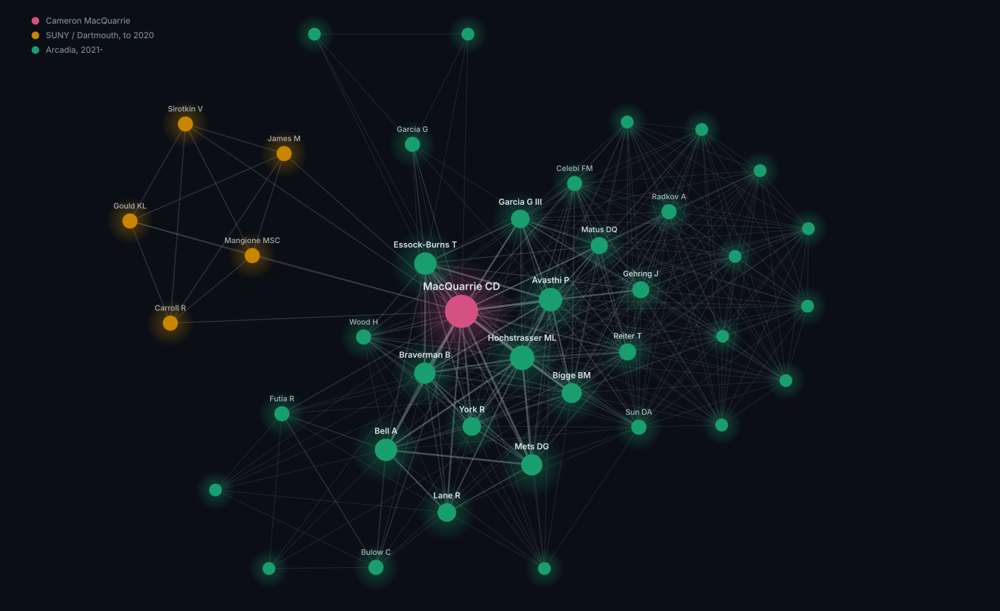

The shape of the publication record, and the headline numbers from a few of the
papers. Built from the same publications.json the main site renders, so it stays
current as that list grows.
Not linked from anywhere and marked noindex — reachable only
with the URL. Charts are static SVG; hover any mark for its value.
21publications
39coauthors
9years, 2018–2026
9papers with Hochstrasser ML
The coauthor web
Everyone who has shared a paper, linked wherever they appear together. Node
size is papers shared; line weight is papers in common. The two eras barely touch — they
connect only through the middle. Drawn from the 20 papers with authorship credit, so it excludes
the one listed above as a contributor.

The record
Output by year, by venue, and who it was with.
Publications per year
Everything counted: papers, Arcadia pubs, abstracts, the thesis and one dataset.
New coauthors per year
First appearance of each person. The jump is the move to Arcadia and its large author lists.
By venue
Most of the output is open access on The Stacks rather than in journals.
Most frequent coauthors
Papers shared. Four conference abstracts still have truncated author lists, so these are lower bounds.
Findings at a glance
Headline numbers from four papers, redrawn to one scale and palette. Each is the
result the paper actually turns on.
Bbc1 sets how far an endocytic patch travels
Distance travelled by the tip markers End4 and Ent1 — the readout for force generated. Deleting Bbc1 doubles it; removing the Myo1 SH3 domain that retains Wsp1 cancels that again.
Chlamydomonas strains standing in for human spermatogenic failure. They are not slower in the same way: cpc1-1 loses more speed, ida4 loses more sprint.
Bell et al., Arcadia Science (2024).
Rescue is mutation-specific
The point of the screen. Linsitinib improves cpc1-1 and makes ida4 worse; only Torin2 helps both. Six compounds at 50 µM.
Bell et al., Arcadia Science (2024), from the V-bottom and single-cell tracking results.
Stripping the diatom wall, and the part that did not replicate
Alcalase works reliably. The cytoskeletal inhibitors gave about 50% protoplasts in the first two trials and 0% on every attempt afterwards — reported rather than quietly dropped.
Avasthi et al., Arcadia Science (2023), doi:10.57844/arcadia-fh8f-xz51.